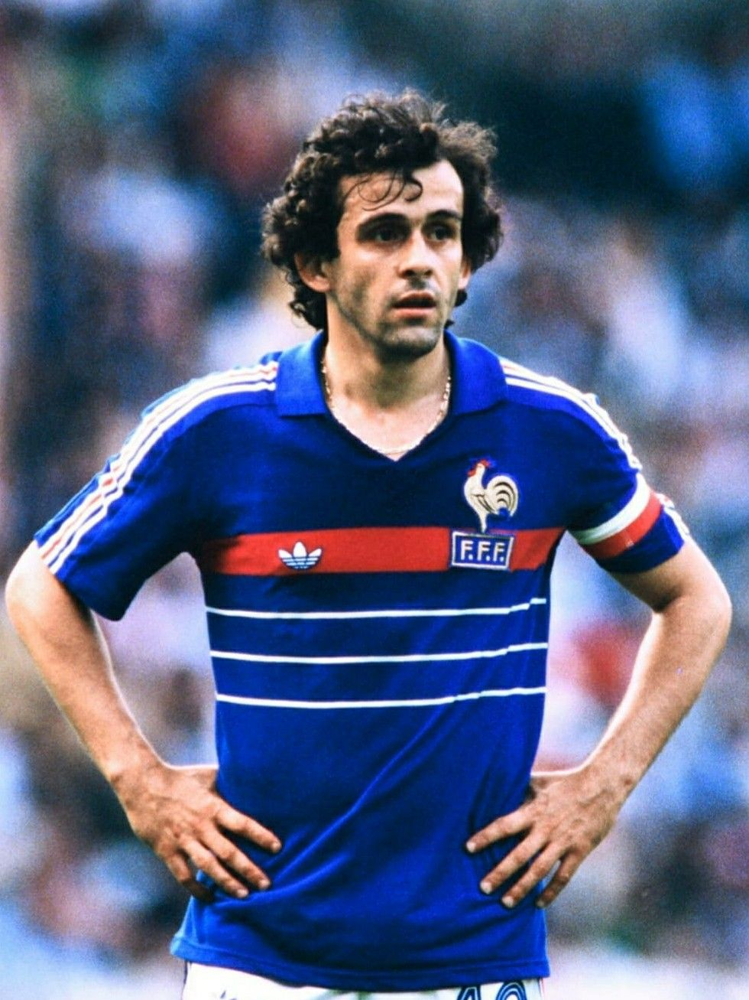
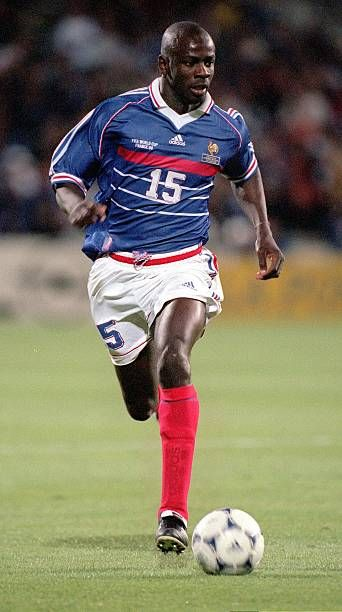
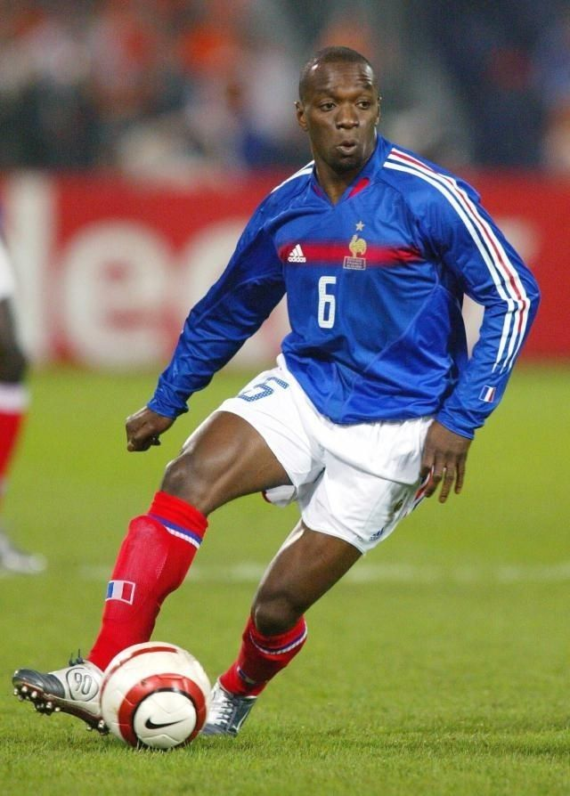
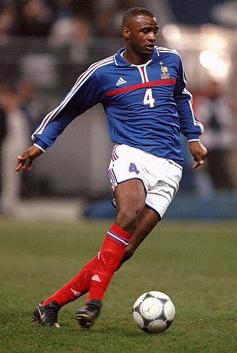
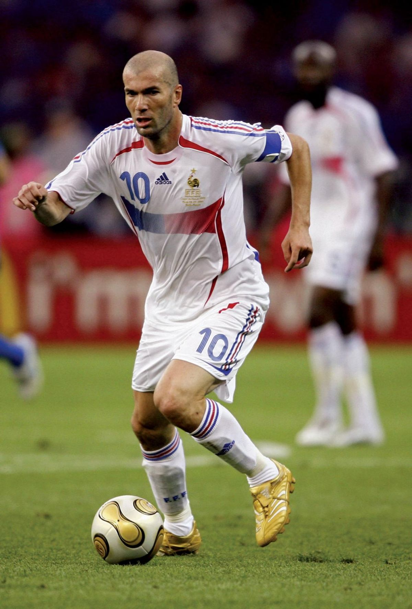
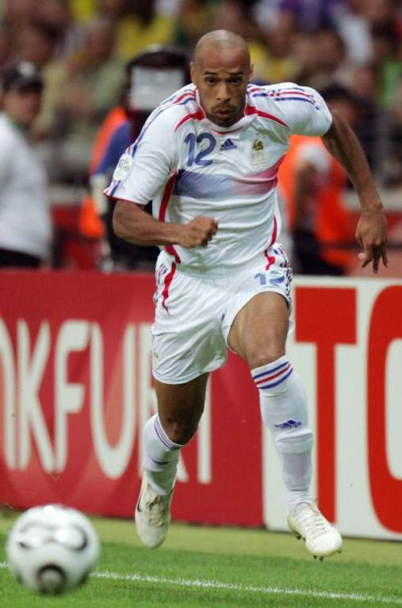
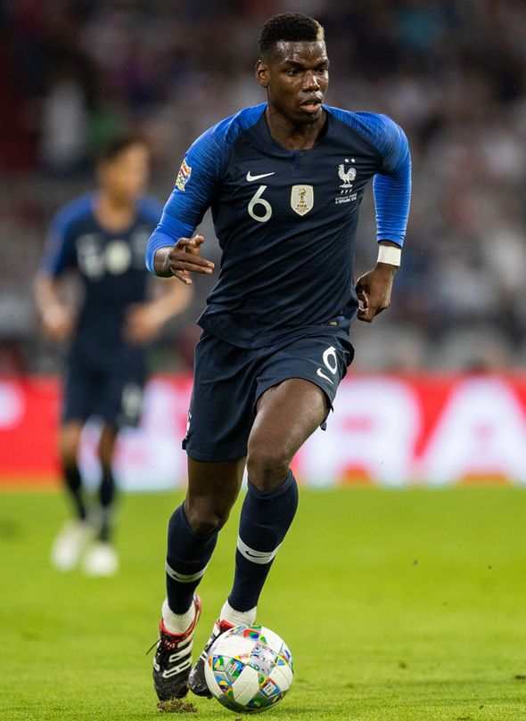
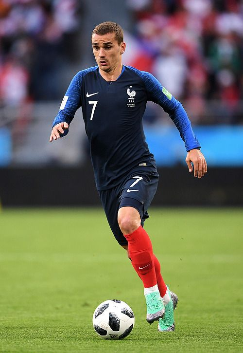
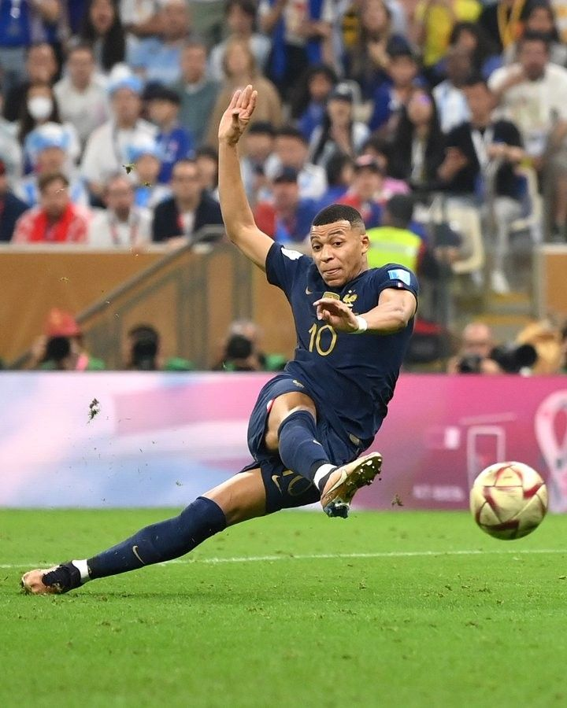

Michel Platini
1976 - 1987
Michel Platini foi um dos maiores jogadores da história do futebol francês. Capitão da seleção, foi eleito o melhor jogador da Europa três vezes consecutivas (1983, 1984, 1985). Conquistou a Eurocopa de 1984 como artilheiro e melhor jogador. Marcou 41 gols em 72 jogos pela seleção.

Lilian Thuram
1994 - 2008
Lilian Thuram é o jogador com mais partidas pela seleção francesa (142 jogos). Campeão mundial em 1998 e europeu em 2000, foi um dos melhores zagueiros da história do futebol. Marcou os dois gols decisivos na semifinal da Copa de 1998 contra a Croácia, levando a França à final.

Claude Makelele
1995 - 2008
Claude Makelele foi um dos melhores volantes defensivos da história do futebol. Campeão mundial em 1998 e europeu em 2000, foi fundamental na proteção da defesa francesa. Sua posição de campo ficou conhecida como "posição Makelele" devido à sua importância tática.

Patrick Vieira
1997 - 2009
Patrick Vieira foi um dos melhores meio-campistas da história do futebol francês. Campeão mundial em 1998 e europeu em 2000, foi fundamental no meio-campo da seleção. Com sua força física, técnica e liderança, foi um dos pilares da equipe francesa durante mais de uma década.

Zinedine Zidane
1994 - 2006
Zinedine Zidane é considerado um dos maiores jogadores da história do futebol. Campeão mundial em 1998 e europeu em 2000, foi eleito o melhor jogador do mundo três vezes. Marcou dois gols na final da Copa de 1998 e foi fundamental na conquista do título. Sua técnica, visão de jogo e elegância o tornaram um ícone do futebol mundial.

Thierry Henry
1997 - 2010
Thierry Henry é o maior artilheiro da história da seleção francesa (51 gols). Campeão mundial em 1998 e europeu em 2000, foi um dos melhores atacantes da história do futebol. Com sua velocidade, técnica e capacidade de finalização, foi fundamental no ataque francês durante mais de uma década.

Paul Pogba
2013 - 2022
Paul Pogba foi um dos melhores meio-campistas da geração atual. Campeão mundial em 2018, foi fundamental no meio-campo francês. Com sua técnica, força física e capacidade de criar jogadas, foi um dos pilares da equipe que conquistou o bicampeonato mundial em 2018.

Antoine Griezmann
2014 - Presente
Antoine Griezmann é um dos jogadores mais importantes da seleção francesa atual. Campeão mundial em 2018, foi eleito o melhor jogador da Copa do Mundo. Com sua versatilidade, técnica e capacidade de decidir jogos importantes, é um dos pilares da equipe francesa.

Kylian Mbappé
2017 - Presente
Kylian Mbappé é uma das maiores promessas do futebol mundial. Campeão mundial em 2018, foi fundamental na conquista do título. Na Copa de 2022, marcou hat-trick na final e foi o artilheiro do torneio. Com sua velocidade, técnica e capacidade de finalização, é considerado um dos melhores jogadores do mundo.